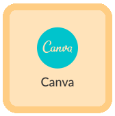
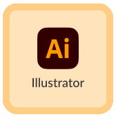
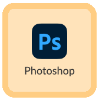
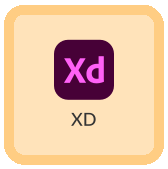
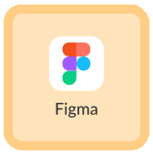
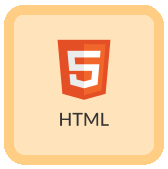
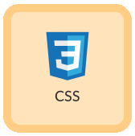
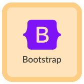

Abilities
Tools






Technical Skills



I work very hard. When I begin something, I am determined. I'm able to handle some pressure. I'm the kind of person that always has others around me in mind. I'm a person with a sense of humor, like to have fun, like to party, but don't drink alcohol.
New is my nickname. My current age is 24 years old. I follow Buddhism.
trium udom suksa pattanakarn nonthaburi school - (2013 to 2019) middle to high school level
silpakorn university Bachelor's degree - (2019 to 2023) Faculty of Information and Communication Technology - GPA 2.87
agile technology company limited - (3 months)
Learn Responsive Website Design Skills Using Figma.
Practice designing website pages from work briefs from the BA and UX/UI Designer teams.
Present work to the BA and UX/UI Designer. Take turns critiquing the work of fellow UX/UI interns and receiving feedback to improve the work.
Practice programming skills with HTML CSS and bootstrap 5 framework from previously designed tasks.
Tools
Technical Skills